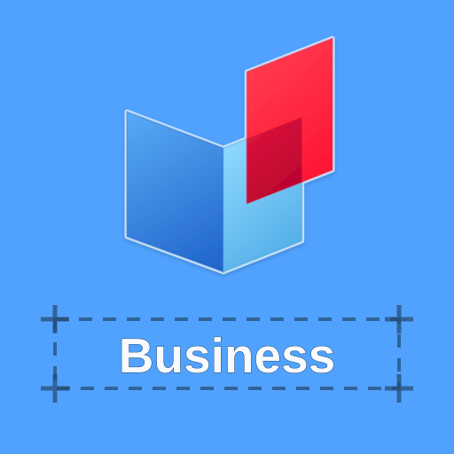

IndexPresse Business
Consulter via IndexPresse
Une connexion via la BnF est nécessaire. Rétablir l’accès BnF. Si le menu des ressources apparaît, choisissez IndexPresse Business.

Consulter via IndexPresse
Une connexion via la BnF est nécessaire. Rétablir l’accès BnF. Si le menu des ressources apparaît, choisissez IndexPresse Business.